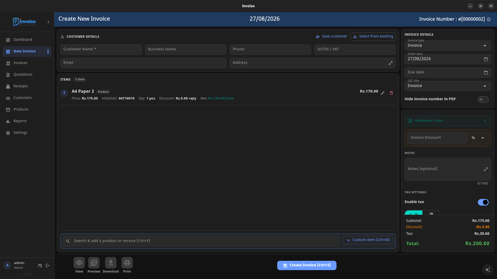
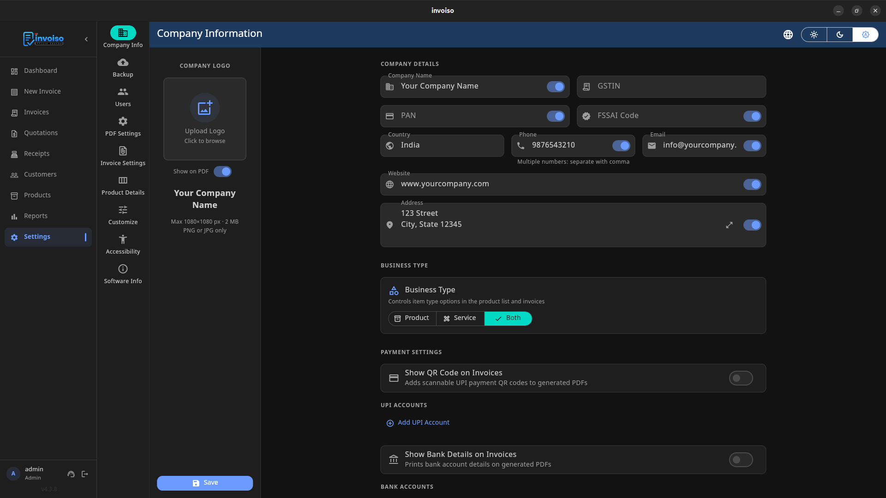

Selling to a customer outside India changes the invoice you need to raise. GST treats an export invoice differently from a domestic one, customs wants specific fields for clearance, and you're billing in a currency that isn't rupees while your accounting still needs to land in INR. None of this is complicated once you know the shape of it — this guide covers the export invoice format under GST, the LUT process most small exporters use, the fields your invoice must carry, and how to handle multi-currency billing without the numbers drifting apart. As always, GST and customs rules are periodically updated by CBIC, so treat this as a working guide and confirm specifics with your CA before your first export shipment. Getting the format right the first time also saves you from reissuing invoices later, which can complicate LUT and refund matching once a shipment is already in transit.
Are exports taxable under GST?
Exports of goods and services from India are treated as a zero-rated supply under Section 16 of the IGST Act. Zero-rated doesn't mean exempt — it means GST is not meant to be a cost on export transactions at all, and exporters get one of two routes to achieve that:
- Export under LUT (Letter of Undertaking): you ship the goods or supply the service without paying IGST upfront, provided you've filed a valid LUT on the GST portal for the financial year.
- Export on payment of IGST: you pay IGST at the time of export and then claim it back as a refund once the shipment is processed.
Most small and mid-size exporters prefer the LUT route since it avoids tying up working capital in a tax that gets refunded later. LUTs are filed once a year and, once approved, apply to every export invoice raised during that period — you just need to quote the LUT reference number on each invoice.
Mandatory fields on an export invoice
An export invoice carries everything a normal GST tax invoice does, plus a set of export-specific fields that customs and your GST return both rely on:
- Invoice number and date — same sequential numbering rules as any other GST invoice.
- Exporter details — your legal business name, address and GSTIN exactly as registered.
- IEC (Import Export Code) — the 10-digit code issued by DGFT that every exporter needs to ship goods out of India; usually shown just below your GSTIN.
- Recipient details — the overseas buyer's name, address and country. A foreign buyer generally won't have a GSTIN.
- HSN code — export invoices typically require the full 8-digit HSN code for goods, rather than the shorter codes allowed on some domestic invoices.
- Zero-rated declaration — a line stating either "Supply meant for export under LUT without payment of integrated tax" (with your LUT reference number) or "Supply meant for export on payment of integrated tax," depending on which route you're using.
- Invoice currency and INR equivalent — the invoice value in the currency you're billing (USD, EUR, GBP, etc.) along with its INR equivalent, converted at the applicable exchange rate on the invoice date.
- Place of supply and port details — port of loading and country of final destination, which customs cross-checks against your shipping documents.
- Shipping bill / bill of export reference — added once the shipment clears customs; this ties your GST invoice to the actual export for refund or LUT compliance purposes.

Multi-currency billing: what to get right
Billing a foreign buyer in their own currency is normal and often expected — a US client paying in USD, a European buyer paying in EUR. The part that trips up small exporters isn't the billing itself, it's keeping the currency conversion consistent across the invoice, your accounting books, and your GST filing:
- Show both figures. The invoice should display the amount in the billed currency and its INR equivalent, since GST returns and your books are ultimately reported in rupees.
- Use a defensible exchange rate. Convert at the rate applicable on the invoice date — typically the RBI reference rate or the rate your bank applies — and keep a record of which rate you used and when, rather than recalculating later from memory.
- Don't edit the rate after the fact. If the rupee moves before payment actually lands, that's a foreign-exchange gain or loss to record separately — the original invoice's conversion rate stays as it was on the invoice date.
- Track payment separately from invoice value. The amount your bank actually credits, after conversion and any bank charges, can differ slightly from the invoice's INR equivalent. Record what you invoiced and what you received as two data points, not one — reconciling the two later is far easier if both were captured at the time rather than reconstructed from bank statements months afterward.
- Keep numbering separate if it helps reconciliation. Some exporters use a distinct invoice number prefix for export invoices, which makes it easier to filter them out during LUT or refund filing.
How Invoiso handles foreign-currency invoicing
Invoiso lets you bill a customer in a foreign currency directly on the invoice, so an overseas buyer sees the amount in the currency they actually pay in, while your invoice record stays part of the same offline database as every domestic sale. You can add custom fields where the standard layout doesn't cover something export-specific — an LUT reference line, a shipping-bill number added after clearance, or a port-of-loading note — without needing a separate tool just for export billing. Company settings hold your GSTIN, IEC and bank details once, so they appear automatically on every invoice, export or domestic, rather than being retyped each time.

Because Invoiso runs offline on your desktop, your export invoice data — buyer details, HSN codes, currency amounts — stays local rather than sitting on a third-party server, which matters for businesses handling overseas client information.
Reporting export invoices in your GST returns
Export invoices don't just sit in your own records — they need to show up correctly in your GST returns for the LUT or refund process to close out. Export invoices are reported separately from domestic sales in GSTR-1, typically under the table meant for exports (commonly referred to as Table 6A), which asks for the invoice details along with the shipping bill number and date once available. If you exported on payment of IGST and are claiming a refund, that refund is generally processed by matching your GST return data against the shipping bill data your customs broker files on ICEGATE — so a mismatch between the invoice value on your GST return and the value declared on the shipping bill is one of the more common reasons refunds get held up. Keeping consistent HSN codes, invoice values and currency conversions between your invoice, your GST return and your shipping documents avoids most of this friction.
Common export invoice mistakes
A few mistakes come up repeatedly with first-time exporters. Quoting a 4 or 6-digit HSN code instead of the full 8-digit code customs expects is one of the most common, since many domestic invoices don't need that precision and the habit carries over. Forgetting to update the LUT reference number when a new financial year's LUT is approved is another — the old LUT number no longer applies once it expires, even if your export activity continues uninterrupted. Some exporters also convert the invoice currency to INR using whatever rate their bank quotes on the day payment arrives, rather than the rate applicable on the invoice date, which creates a mismatch between the invoice record and the return filed against it. And a surprising number of otherwise GST-compliant businesses simply forget to add their IEC to the invoice, treating it as a customs-only detail rather than something that belongs on the document itself.
A practical checklist before your first export invoice
- Confirm your IEC is active and linked to your GST registration.
- File an LUT for the current financial year if you plan to export without paying IGST upfront.
- Use the full 8-digit HSN code for every item on the invoice.
- Add the zero-rated declaration line with your LUT reference, or note that IGST has been paid if you're going the refund route.
- Show the invoice currency and its INR equivalent at the rate applicable on the invoice date.
- Keep the shipping bill or bill of export number ready to attach to the invoice record once the shipment clears customs.
- Check current LUT, refund and e-invoicing thresholds with your CA — CBIC updates procedural rules periodically, and this guide covers the structure, not a substitute for that check.
- Keep a copy of every export invoice alongside its matching shipping bill and bank realisation certificate, so a GST audit or refund query can be answered from one folder rather than reconstructed after the fact.
Invoiso supports foreign-currency invoicing and custom fields for LUT references, shipping details and more. See free GST billing software or download the desktop app to set up your export invoices.